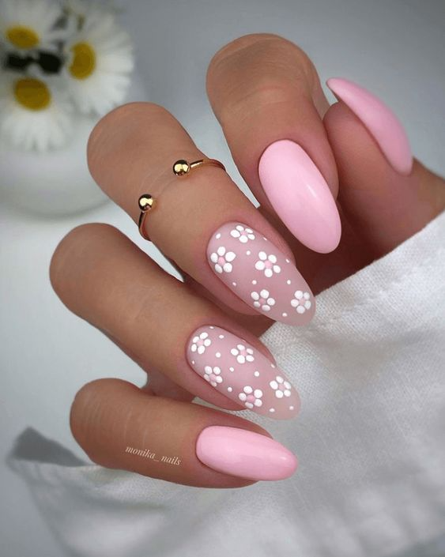
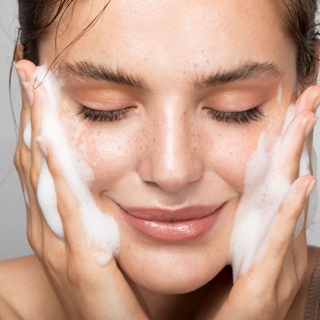
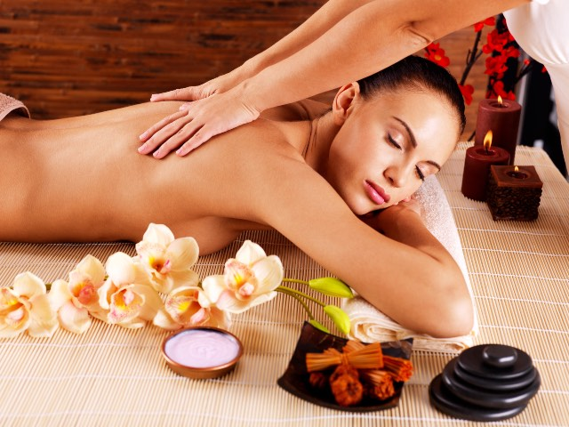

Conoce nuestras opciones
Las uñas son tu carta de presentacion

Para empezar es importante conocer un poco mas...
La uña es una estructura anatómica esencial ubicada en las extremidades
de los dedos de las manos y los pies en los seres humanos.
Las uñas tienen funciones importantes en la protección de los tejidos subyacentes
la mejora de la sensibilidad táctil y la manipulación de objetos pequeños.
Invierte en tu piel, va a representarte

A continuacion te dejamos algunos de los beneficios que trae la rutina
de skin care
Primero veremos una definicion rapida de skin care:
Se trata de un concepto inglés que describe la rutina de la atención y cuidado de la piel
pero no sólo para mantenerla bonita, sino también saludable.
- Mejorar nuestra apariencia y autoestima:
Nos ayuda a vernos y sentirnos mejor con nosostros mismos
- Retrasa la aparicion de arrugas:
la limpieza diaria de la piel junto al uso de productos con activos antiedad
ayuda a retardar el envejecimiento cutaneo
- Oxigena:
un beneficio para destacar, porque activa las defensas naturales de la piel
y le permite respirar mejor.
- Elimina células muertas y restos de polución:
durante el día la piel acumula suciedad e impurezas que
es importante quitar porque obstruyen los poros.
Masajes con reiki
El Reiki es una práctica espiritual con las dimensiones basadas en la materia y espíritu,
caracterizado por la imposición de manos con el fin de restablecer el equilibrio del cuerpo.
Este es uno de los métodos curativos más antiguos de que la humanidad tiene conocimiento.

Yoga para cuidar la salud mental
El yoga es una práctica que conecta el cuerpo, la respiración y la mente.
Esta práctica utiliza posturas físicas, ejercicios de respiración y meditación para mejorar la salud general.
El yoga se desarrolló como una práctica espiritual hace miles de años.
Hoy en día, la mayoría de las personas en occidente que practican yoga lo hacen como ejercicio o
para reducir el estrés.

ALgunos beneficios del yoga
- Reducir presion arterial y frecuencia cardiaca
- Ayuda a un mejor descanso por la noche
- Mejora la concentracion
- Reducir el estres
- Ayuda a mejorar la confianza en uno mismo